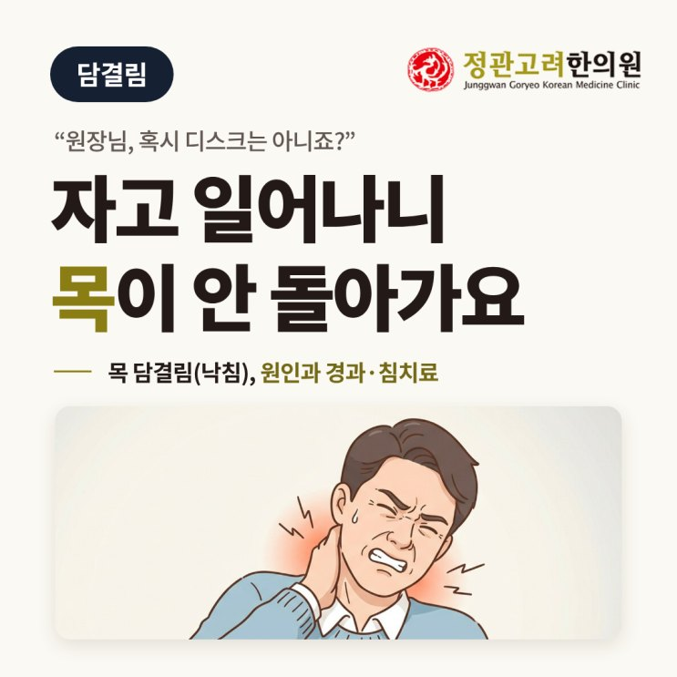
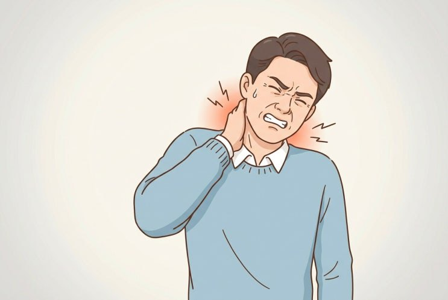
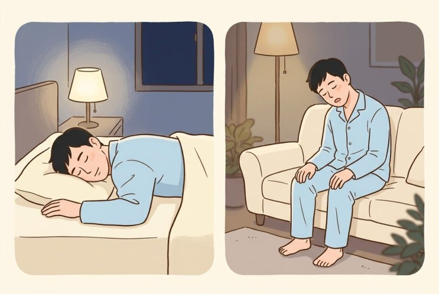
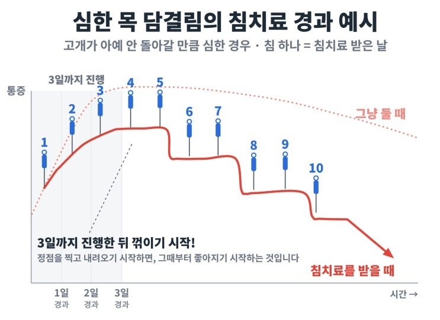
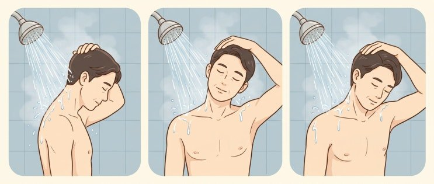

자고 일어났더니 목이 안 돌아가요 — 목 담결림(낙침) 원인, 경과, 침치료, 주의사항
이 글에서 알 수 있는 내용
- 목 담결림(낙침)은 왜 생기고, 목디스크와 어떻게 다를까요
- 그냥 둘 때와 침치료를 받을 때의 경과
- 빨리 회복하는 법과 바로 진료가 필요한 경우

"원장님, 자고 일어났더니 갑자기 목이 안 돌아가요."
가끔 이렇게 목을 부여잡고 힘들어 하며 진료실에 들어오시는 환자분이 계십니다.

자고 일어나 갑자기 목이 아프고 잘 안 돌아가는 걸 한방에서는 '낙침(落枕)'이라고 합니다.
낙침이 세게 오면 처음 며칠은 꽤 힘들 수 있습니다.
오늘은 왜 이런 현상이 생기는지, 얼마나 지나야 풀리는지, 집에서는 뭘 조심하면 좋은지 말씀드리겠습니다.
목의 담결림, 낙침이란?
"담 결렸다"는 말은 다들 한 번 쯤 들어보거나 써 보셨을 겁니다.
그중에서도 자고 일어나서 생긴 목 담결림을 낙침(落枕)이라고 부릅니다.
베개에서 목이 떨어진 채로 잤다는 뜻입니다~
양방에서는 보통 목 근육이 갑자기 뭉친 급성 경부통(영어로는 흔히 stiff neck)으로 봅니다.
목 안에서는 무슨 일이 일어난 걸까요?
목 근육이 한계를 넘으면, 더 다치지 않으려고 근육이 스스로 꽉 붙잡고 버티는 상태가 됩니다.
고개를 돌리려 하면 이 근육이 "움직이지 마!" 하고 더 세게 버티니, 아프고 돌아가지 않는 것입니다.
이런 증상이 나타납니다
- 아침에 일어나자마자 목이 아프고 깁스한 것처럼 잘 안 돌아갑니다.
- 한쪽으로 돌리거나 기울일 때 "악!" 소리가 날 만큼 아픕니다.
- 날개뼈 안쪽, 어깨 위까지 당깁니다.
- 아픈 쪽을 피하려고 고개가 한쪽으로 살짝 기운 채 지내기도 합니다.
목디스크와는 어떻게 다를까요?
많은 분들이 "혹시 디스크 아닌가요?" 하고 걱정하십니다.
목디스크는 팔이나 손까지 통증이 뻗치거나, 저리거나 힘이 빠지기도 합니다.
하지만, 담결림은 목과 어깨 주변만 뭉치고 아픕니다.
왜 생기는 걸까요?
원인은 크게 네 가지입니다.
한 가지 만으로 생기기도 하고, 두 세 가지가 겹치는 경우도 많습니다.
① 우선, 평소 쌓인 목 근육의 피로입니다
목 근육은 하루 종일 무거운 머리를 받치고 있습니다.
이 피로가 조금씩 쌓이다가 임계점을 넘는 순간 탈이 납니다.
같은 베개를 수 년 간 베셨는데 왜 하필 오늘 아침일까요?
그동안 쌓인 피로가 넘친 날이기 때문입니다.
- 오랜 시간 스마트폰·컴퓨터 보기
- 장거리 운전
- 이사, 김장처럼 평소 안 하던 일로 무리
- 잠이 부족했거나, 스트레스가 많았던 날
② 두 번째로, 자는 동안의 나쁜 자세입니다
- 엎드려서 고개를 한쪽으로 돌리고 자기
- 소파나 의자에서 고개를 떨군 채 졸기
- 너무 높은 베개, 또는 옆으로 누웠을 때 너무 낮은 베개

자는 동안에는 불편해도 자세를 고치지 못하니, 목 근육이 몇 시간 씩 한쪽으로 당겨진 채 버티게 됩니다.
③ 그 다음! 찬바람입니다
여름에는 선풍기·에어컨 바람, 날씨가 서늘해질 때는 새벽의 찬 기운이 목에 닿는 것 만으로도 근육이 움츠러듭니다.
한의학에서는 이것을 풍한(風寒), 즉 찬 바람이 근육에 들어왔다고 봅니다.
쉽게 말해 목 근육이 감기에 걸린 것이죠.
그래서 에어컨을 많이 트는 한여름과, 일교차가 큰 환절기에 목 담결림이 유독 많습니다.
④ 마지막으로, 기저 질환이 있는 경우입니다
일자목, 목디스크, 반복되는 목 통증처럼 목에 구조적인 문제가 있는 분들은 목 담결림이 자주 재발하거나 회복이 더딜 수 있습니다.
경과는 어떻게 될까요? — 자연경과 vs 침치료
이게 제일 궁금해 하실 부분인데요.
그냥 두면 (자연경과)
목 담결림은 기본적으로 저절로 좋아지는 병입니다.1 하지만 바로 좋아지지는 않습니다.
저는 환자분들께 이렇게 말씀드립니다.
"목 근육에 감기몸살 걸렸다고 생각하세요."
감기몸살도 하루 만에 낫지 않고, 2~3일은 더 심해졌다가 좋아지는 경우가 많죠? 담결림도 똑같습니다. 처음 며칠은 더 심해지기도 합니다.
회복되는 데 걸리는 기간도 감기처럼, 며칠이나 1주일 안에 낫는 분도 있고 2~3주 가는 분도 있습니다.
그래서 처음 오신 분께 미리 말씀드립니다.
"담 쎄게 오면 처음 2~3일은 뭘 해도 힘듭니다. 원래 그런 거니 너무 걱정하지 마세요."
환자분들은 하루 아침에 갑자기 고개를 못 돌리니 '이거 큰 병 아닌가?', '혹시 이러다가 큰 일 나는 건 아닐까?' 불안해 하시거든요.
침치료를 받으면
가볍게 담이 온 분은 며칠 사이에 한결 편해지기도 합니다.
하지만, 고개가 아예 안 돌아갈 만큼 심하게 온 분은 침을 맞아도 처음 2~3일 정도는 힘들 수 있습니다.
아래 그래프와 영상은 담결림이 심하게 온 분들의 경과를 제가 진료실에서 본 경험을 바탕으로 그린 예시입니다.

움직이는 영상으로 보시면 더 쉽습니다~
제 경험 상, 담이 세게 오면 침을 맞아도 처음 이틀, 사흘은 꽤 힘들 수 있습니다.
며칠 비슷하다가 어느 날 고개가 한결 잘 돌아가는 분도 계십니다.
영상 속 치료 횟수는 이런 경과를 설명하기 위한 예시입니다. 좋아지기 시작하는 시점과 필요한 치료 횟수는 사람마다 다릅니다.
2024년에 낙침 환자를 대상으로 한 여러 임상 시험을 종합한 연구에서, 침치료를 받은 쪽의 통증이 더 줄고 목을 움직이는 범위도 더 넓어졌다고 보고했습니다.3
정관고려한의원에서는 목 담결림 치료를 위해 침·전침, 부항(습식, 건식), 약침, 전자뜸, 온찜질, 물리치료 등을 시행합니다.
빨리 회복하려면 이것 만은 지켜 주세요
① 따뜻하게 해 주세요
- 온찜질
- 사우나, 온수 샤워
따뜻한 샤워 물을 목에 맞으면서, 손으로 머리를 가볍게 밀어 주며 스트레칭 하는 것도 좋은 방법입니다.

② 찬바람과 냉찜질은 피해 주세요
아프다고 얼음찜질을 하시는 분들이 계시는데, 담결림에는 냉찜질이 맞지 않습니다.
선풍기·에어컨 바람도 목에 직접 닿지 않게 해 주세요. 얇은 목도리도 좋습니다~
③ 충분히 쉬고, 푹 주무세요
지친 근육이 회복하려면 충분한 휴식과 잠이 필요합니다.
아픈 동안에는 야근이나 무리한 일정을 조금 줄여 보시기 바랍니다.
④ 억지로 돌리거나 세게 주무르지 마세요
"풀어야지" 하고 아픈 쪽으로 자꾸 돌려 보거나, 세게 주물러 "뚝" 소리를 내면 굳은 근육이 더 놀라 단단히 버티게 됩니다.
아프지 않은 범위 안에서만 천천히 움직이시면 됩니다.
그렇다고 꼼짝 않고 있는 것도 좋지 않습니다. 목 보호대도 요즘은 권하지 않습니다.2 오히려 더 굳을 수 있기 때문입니다.
⑤ 운전은 특히 조심하세요
고개가 잘 안 돌아가 옆이나 뒤를 살피기 어렵다면 운전은 미루세요.
마지막으로 제일 중요! 이럴 땐 바로 진료를 받으세요
- 목이 뻣뻣하면서 열이 나거나 심한 두통이 있으면 바로 응급 진료를 받으세요.
아이가 열이 나면서 목을 잘 못 움직일 때도 마찬가지 입니다. - 사고 뒤 목이 아프거나 새로 팔·손이 저리거나 힘이 빠지면 신속히 진료 받으세요.
- 통증이 계속 심해지거나 며칠이 지나도 풀리는 기미가 없으면 진료를 받으세요.
목은 하루에도 수백 번 움직이며 무거운 머리를 받치고 있습니다.
담 결림은 그동안 쌓인 피로에 목이 보내는 "잠깐 쉬어 가자"는 신호입니다.
이번 기회에 그동안 쌓인 목의 피로도 한번 풀어 주시기 바랍니다.^^
한의학박사 · 한방재활의학과 전문의 박장우
참고 자료 · 그림 출처
- Vasseljen O, et al. Natural course of acute neck and low back pain in the general population: the HUNT study. Pain. 2013. doi.org/10.1016/j.pain.2013.03.032
- Patient.info — Torticollis (목 보호대 비권장). patient.info
- Efficacy and safety of acupuncture treatment for stiff neck: A systematic review and meta-analysis. Medicine (Baltimore). 2024. doi.org/10.1097/MD.0000000000040415
그림 출처
- 삽화: 이 칼럼을 위해 새로 제작한 그림입니다.